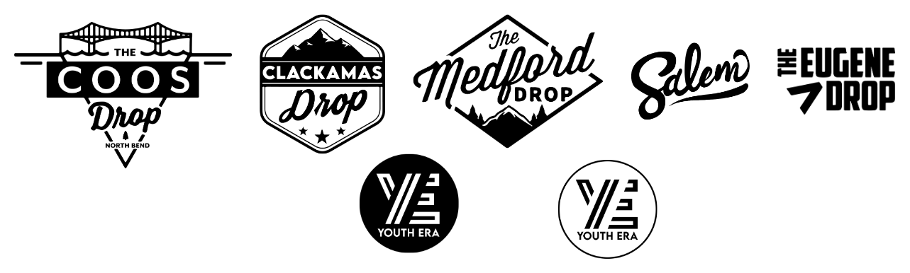
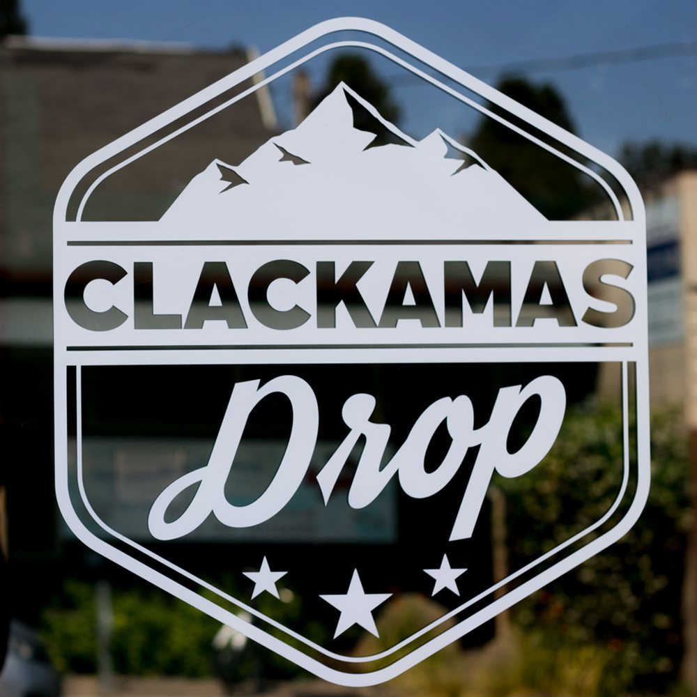
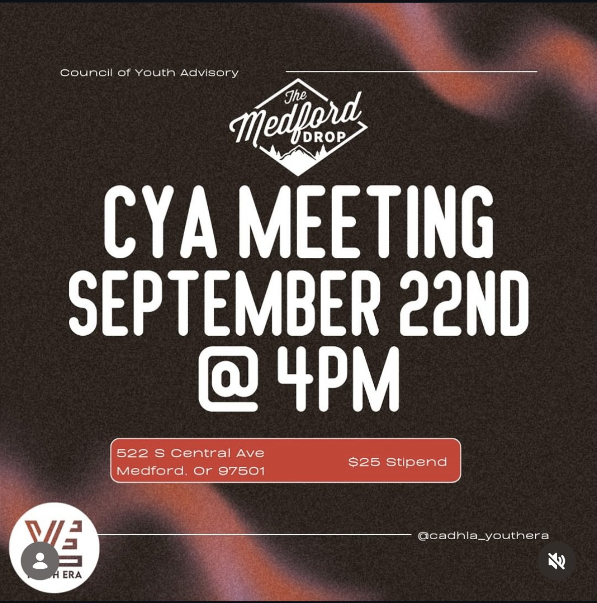
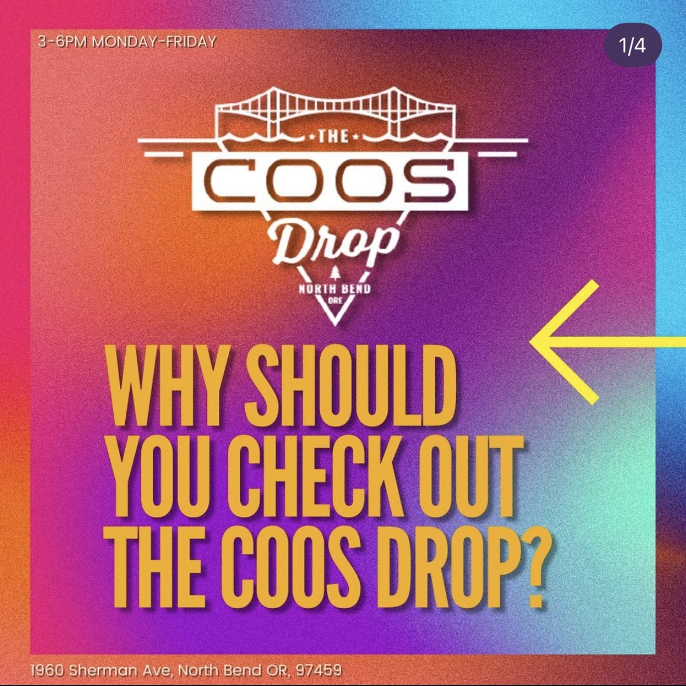
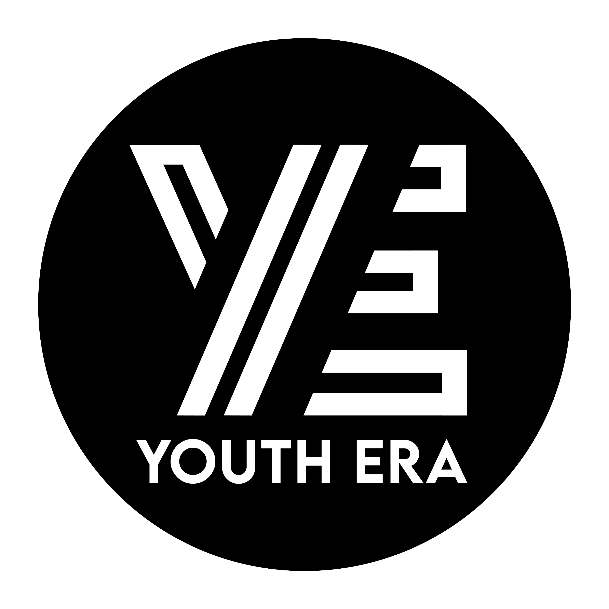
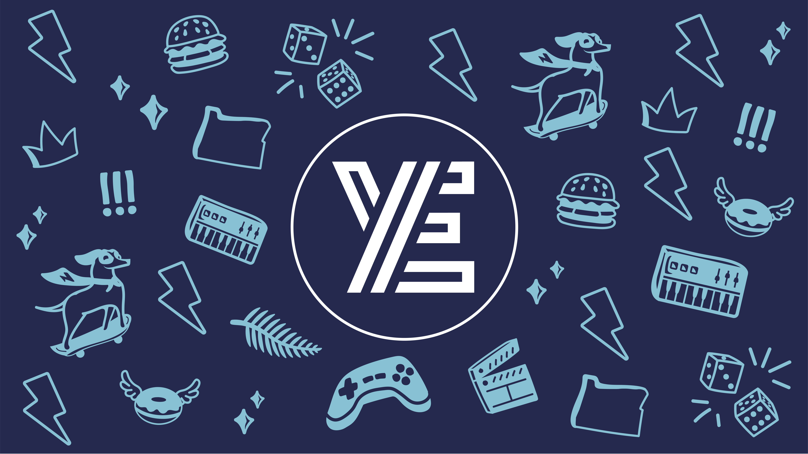
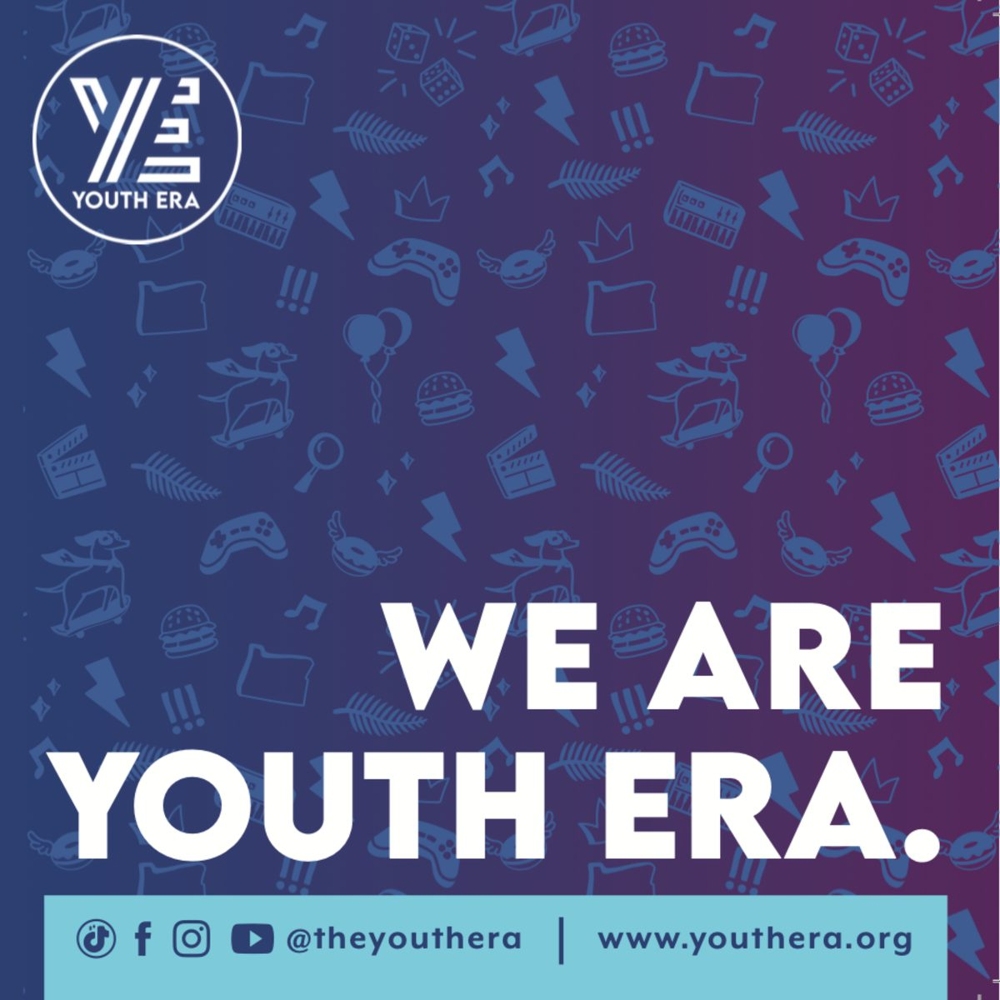
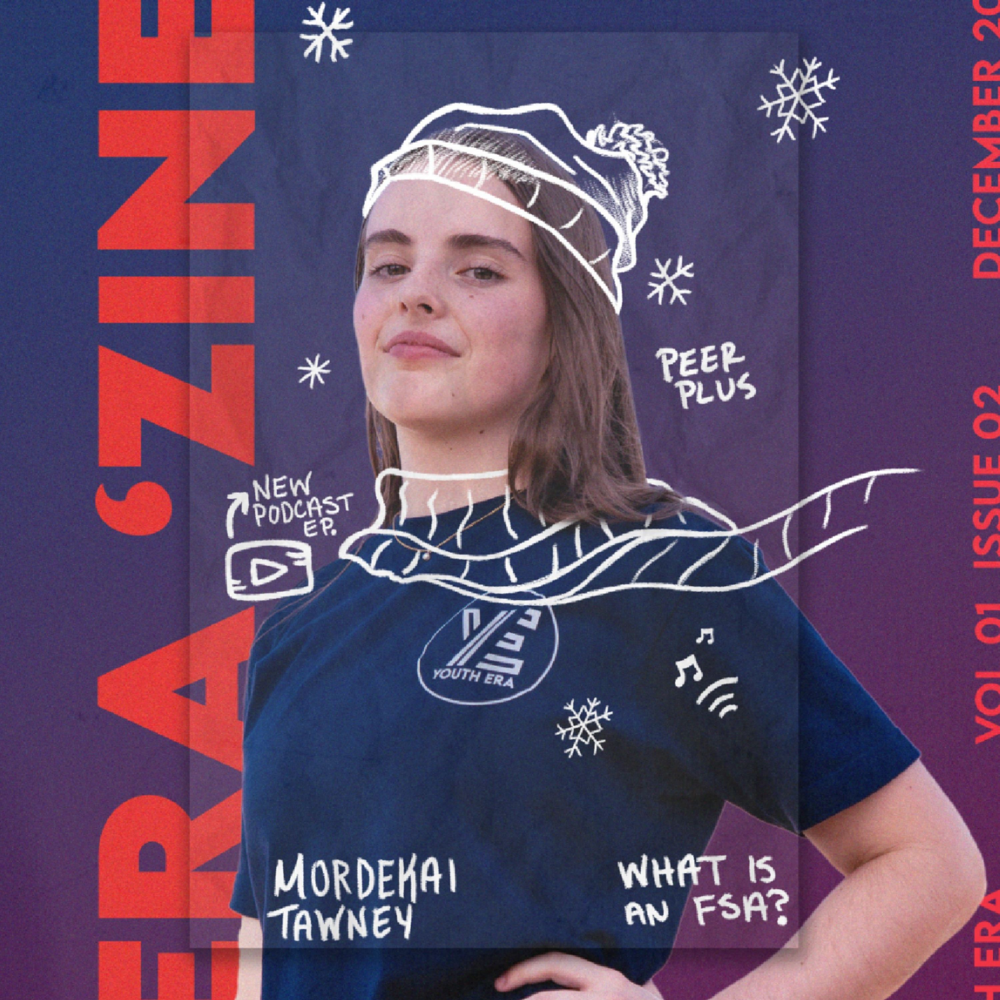

Case study
Youth Era: From Seven Logos to One Brand
Youth Era had six youth community programs, seven logos, and visitors who didn't know they were inside a Youth Era location. I took their fragmented brand and made it into one cohesive company.
images/youth-era-hero.jpgThe unified brand in use: a wide shot or a layout of materials together
Seven Logos, No Brand
Every location had its own name, logo, and look. Each one felt like its own small company, and the parent brand was invisible.
images/logos-before.pngLineup of the old location logos plus the original Youth Era logo, on a plain background
images/before-post-1.jpg
images/before-post-2.jpg
images/before-post-3.jpg
Earning the Change
When I pitched unifying the brand, leadership's main concern was how attached each location was to its own identity. So I went to talk to the staff.
They weren't attached to their logos. They were protecting their relationships with the youth they served. I showed them how the Youth Era name gave them credibility and backup, and we built the transition plan together. I kept the conversation on the youth they hadn't reached yet, asked what materials they were missing, and delivered, starting with bilingual brochures. I earned their trust, so when I said this change was for them and their youth, they believed me.
One Brand, Everywhere
One logo, one naming system (Youth Era Medford, Youth Era Eugene), and brand standards and Canva templates so every location could create on-brand materials on its own. And they knew I was there whenever they needed me.
images/logo-unified.pngThe unified Youth Era logo
images/brand-sheet.jpgBrand overview: logo, colors, type
Across Every Touchpoint
images/bilingual-brochure-cover-english.jpgBilingual brochure or a print spread
Print Materials
Brochures, flyers, and stickers built on the unified brand, including a double-sided bilingual format so one piece could serve youth and their parents.
View Project →images/card-erazine.jpgERA'ZINE spread
Internal Newsletter
An interactive quarterly newsletter that unified the internal culture while the brand unified externally. I gathered the stories, designed the layouts, and tracked engagement to shape each issue.
View Project →images/card-renovation.jpgClackamas center, after
The Youth Era Clackamas Renovation
A seven-room center redesigned for everyone who walks in: youth, staff who need confidential and group spaces, and parents and partners deciding whether to trust us.
View Project →